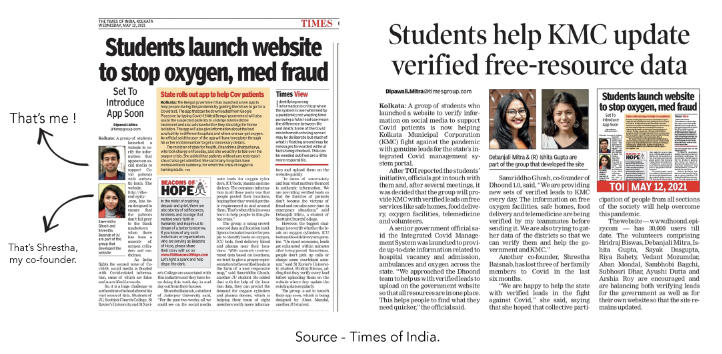

A man outside a Delhi hospital devoid of any medical attention. source - BBC News
2021 saw a massive rise of covid cases in India, which was callled the second wave. Resources were scarce, the health infrastructure of the nation came tumbling down. Millions died, by simply not being able to access the right facility in the right time.
DHOOND 1.0 is a platform that lists all covid related resources (oxygen cylinders, hospital beds, ICU facilities, ambulances, food delivery) in a form of a map. This essentially enables a covid patient to find resources in and around their location in the nick of time. This helps because when the oxygen saturation percentage of a patient is running low, he/she does not have much time- then parsing through the huge amount of data on social media, does harm more than good. DHOOND 1.0 had a 15 member backend team that managed a hotline for resources that connected patients to the services in real time.
Having access to the correct information at the right time is the key to save lives in this pandemic.
DHOOND 1.0 is based on the city of KOLKATA primarily. Kolkata was one of the most affected cities during the second wave in India. With over 1,57,000 cases recorded in a month alone- Kolkata has been the 3rd perilious city in terms of daily cases in the country. To put Kolkata in persepective, these infographics below would help -
Having access to the correct information at the right time is the key to save lives in this pandemic.
DHOOND 1.0 is based on the city of KOLKATA primarily. Kolkata was one of the most affected cities during the second wave in India. With over 1,57,000 cases recorded in a month alone- Kolkata has been the 3rd perilious city in terms of daily cases in the country. To put Kolkata in persepective, these infographics below would help -
Now, during the second wave in India people resorted to social media as a way to reach out to other people to seek help for their patients. People asked for oxygen cylinders to ambulances -on twitter, facebook and instagram. Subsequently people who knew where these resources are available responded, however due to uneven dissemination of such huge amount of information the right person does not get the correct resource on time.
These were some of the plea tweets (out of millions) that were made in response to the resource scarcity during the second wave. Here we see that one aspect is common in these tweets- the LOCATION, this is was leverage point from which a USER LOCATION based SERVICE was born.
The map was created with google my maps, with the resource data (scraped from lead posts) being fed in and subequently being plotted as location points on the map. The leads as plotted on the map had all the required information that was required for a patient to access it in the nick of time.
The link above shall take you to the raw data set that was a result of both scraping social media and manual accumulation of posts. This data was then filtered, as many did not have location attributes and then plotted on Google my Maps.
An interactive map was created for understanding and visualising the data we received on our website. A map assembly for the month of May has been shown. It primarily helped us to understand the most affected areas, so more attention could be imparted to those areas.
Salt Lake and Tiljala were 2 places with the most searches. So now, on analysing the resource
distribution we see that at Salt Lake oxygen was most in demand and in Tiljala it was hospital beds. Subsequently more Salt Lake and Tiljala centric leads were pumped into DHOOND 1.0.
During the day shift we see requirement of oxygen peaks between 10am to 12pm. The backend team working maintain this as ‘alert hours’ for catering more people during the time of surge.
The graphic above shows peak time for site visits. This is just for the month of May. A median analysis showed us that most of the searches occured during 10 am to 1pm on an average day, the data being analysid for a period of 2 months.
This time frame of 10 am to 1pm is particularly important.
Following this, we were approached by the KOLKATA MUNICIPAL CORPORATION for assisting them by engaging in a data sharing and consulting excercise. The above analysis played a small role in deciding lockdown timings in the state of West Bengal. Shops were allowed to open from 7am to 10am. Post which the lockdown was initiated.
This time frame of 10 am to 1pm is particularly important.
Following this, we were approached by the KOLKATA MUNICIPAL CORPORATION for assisting them by engaging in a data sharing and consulting excercise. The above analysis played a small role in deciding lockdown timings in the state of West Bengal. Shops were allowed to open from 7am to 10am. Post which the lockdown was initiated.

Our 'If I had a dollar, for everytime' moment !
Bengal is famous for her sweets. In Kolkata, every good occasion is celebrated with sweets. ‘Pantua’ being the most eminent of all .
So I decided to have plates for every covid resource, we provided information on (of course graphically). We would add a Pantua everytime we received a positive feedback from our users. 8,000 + feedbacks were received, out of which 6418 were positive. The data visualisation was carried out on this sample set of 6418.
This was our ‘If I had a dollar, for everytime’ moment.
So I decided to have plates for every covid resource, we provided information on (of course graphically). We would add a Pantua everytime we received a positive feedback from our users. 8,000 + feedbacks were received, out of which 6418 were positive. The data visualisation was carried out on this sample set of 6418.
This was our ‘If I had a dollar, for everytime’ moment.
Thankfully, DHOOND 1.0 was pretty optimistically received by the people of Kolkata and we were featured in 7 leading media outlets that helped us to spread to the people of Kolkata and Bengal.
The Times of India : May 12, 2021
http://toi.in/gd3X5Z/a31gj
Zee 24 Ghanta : May 12, 2021
https://www.facebook.com/Zee24Ghanta/videos/135062668655104/
ABP Ananda : May 12, 2021
https://www.facebook.com/watch/?v=260622045793403
94.3 Radio One Kolkata : May 13, 2021
https://m.facebook.com/story.php?story_fbid=1927498917424587&id=207469049427591
Ei Samay, Times Group : May 15, 2021
https://www.facebook.com/107679274844637/posts/108721254740439/
The Times of India : May 20, 2021
http://toi.in/Fe_8Db/a31ga8
Kolkata 24x7 : May 21, 2021
https://fb.watch/5DjjFEp5JP/
The New Indian Express- Edex Live : May 25, 2021
https://www.edexlive.com/people/2021/may/25/these-kolkata-students-are-running-down-leads-via-their-covid-resource-website-flagging-frauds-21040.html
http://toi.in/gd3X5Z/a31gj
Zee 24 Ghanta : May 12, 2021
https://www.facebook.com/Zee24Ghanta/videos/135062668655104/
ABP Ananda : May 12, 2021
https://www.facebook.com/watch/?v=260622045793403
94.3 Radio One Kolkata : May 13, 2021
https://m.facebook.com/story.php?story_fbid=1927498917424587&id=207469049427591
Ei Samay, Times Group : May 15, 2021
https://www.facebook.com/107679274844637/posts/108721254740439/
The Times of India : May 20, 2021
http://toi.in/Fe_8Db/a31ga8
Kolkata 24x7 : May 21, 2021
https://fb.watch/5DjjFEp5JP/
The New Indian Express- Edex Live : May 25, 2021
https://www.edexlive.com/people/2021/may/25/these-kolkata-students-are-running-down-leads-via-their-covid-resource-website-flagging-frauds-21040.html
Note- A lot of this data visualisation was not present during the time of the actual operation.Simple excel sheets worked to save time, given the scale of the crisis. The data has been visualised again for further
research and strengthening of DHOOND 1.0 in the later stages.